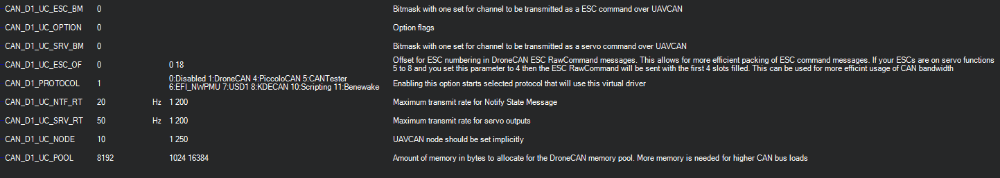

DroneCAN Setup¶
DroneCAN was created to continue the development of the widely used UAVCAN v0 protocol. This protocol has proven itself as robust and feature rich and has been widely deployed in the commercial drone industry and enjoys broad support among industry partners. The proposed introduction of the UAVCAN v1 protocol involved changes to UAVCAN that increased complexity and did not offer a smooth migration path for existing deployments. After extended discussions within the UAVCAN consortium it was decided that the best solution was to continue development of UAVCAN v0 under the name DroneCAN.
This article provides guidance to setup DroneCAN protocol on ArduPilot.
Tip
The physical CAN port, and its driver selected as DroneCAN protocol, should be enabled first. Please refer to the CAN Bus Setup
Overview¶
DroneCAN is a lightweight protocol designed for reliable communication in aerospace and robotic applications via CAN bus. The DroneCAN network is a decentralized peer network, where each peer (node) has a unique numeric identifier - node ID and that is only one parameter needs to be set for basic setup.
Detailed description of protocol can be found at https://uavcan.org/
DroneCAN Peripheral Types Supported¶
ArduPilot currently supports the following types of DroneCAN peripherals:
GPS |
Compass |
Barometer |
Rangefinder |
ADSB Receiver |
Power Module |
LED |
Buzzer |
Airspeed |
Safety Switch/LED |
||
DroneCAN Adapter Node |
||
DroneCAN device type is selected by:
GPS,Compass, Barometer, ADSB Receiver, LED, Buzzer, Safety Switch/LED, and Airspeed devices are automatically identified in the DroneCAN protocol
Rangefinder:
RNGFNDx_TYPE= 24Power Module: BATT_MONITOR or
BATTx_MONITOR= 8
DroneCAN Setup Parameters¶
shown for the first DroneCAN driver, second driver has identical parameters
{kind=link}
CAN_D1_PROTOCOL if set for DroneCAN(1) has the following associated parameters:
CAN_D1_UC_POOL: a memory pool for the driver of this size will be allocated if possible. The default size can usually be reduced, saving RAM for other functions and features, if the CAN traffic is light, as with GPSes or Compass, as opposed to ESCs.
DroneCAN Adapter Node¶
These devices are general purpose DroneCAN nodes with I/O ports that allow the attachment of non-DroneCAN ArduPilot peripherals to the DroneCAN bus via UART ports, I2C, SPI, and/or GPIOs. See DroneCAN Adapter Nodes.
DroneCAN ESC and Servo Configuration settings¶
See DroneCAN ESCs for information on DroneCAN ESCs.
Each DroneCAN ESC or Servo will have an programmed ID or channel address corresponding to the autopilot’s servo/motor output channel. These are set by switches on the ESC or via a setup/configuration program, depending on the ESC.
There are three parameters that determine which autopilot servo/motor channels are sent to the CAN ESC and/or Servos: For the examples below, the values are shown for CAN driver #1.
CAN_D1_UC_NODE - which is the node ID of the autopilot sending the commands to the ESCs so that there can be differentiation between multiple sources on the CAN bus
CAN_D1_UC_ESC_BM - bitmask that determines which autopilot servo/motor output signals are sent to the DroneCAN ESCs.
CAN_D1_UC_ESC_SRV - bitmask that determines which autopilot servo/motor output signals are sent to the Servos on DroneCAN Servos
In the bitmap masks, each bit position represents an ESC or servo ID number that the corresponding autopilot servo/motor channel command will be directed to. For example, 00001111 (15 decimal) would send commands to ESC or SERVO IDs 0 through 3.
Note
When using DroneCAN ESCs/Servos, you can set the SERVOx_FUNCTION for those, but still use those outputs on the autopilot for GPIOs using the SERVO_GPIO_MASK parameter. The autopilot outputs will become GPIOS and the corresponding SERVOx_FUNCTION will be sent out DroneCAN.
To reduce bandwidth, the CAN_D1_UC_ESC_BM and CAN_D1_UC_ESC_SRV_BM params should be set to enable only the motor and servo channels you need CAN signals to be sent to. In addition, the CAN_D1_UC_ESC_OF parameter lets you further maximize bandwidth by offsetting the ESC position to the first time slots on the bus, eliminating empty time slots. For example, if the ESCs are on outputs 5 to 8, an offset of 4 will transport them in the first 4 timeslots which would otherwise be empty and consume bandwidth.
Example: For a configuration of CAN servos on channels 1,2,4 and ESC motor on channel 3, set:
Example: CAN_D1_UC_ESC_BM = 0x0B
Example: CAN_D1_UC_ESC_SRV = 0x04
GPS configuration settings¶
If there is a DroneCAN GPS device, it has to be enabled in GPS
subgroup of parameters.
The TYPE parameter should be set to 9 for corresponding GPS receiver in autopilot.
{kind=link}
DroneCAN LED configuration¶
DroneCAN LEDs are enabled by setting bit 5 in the NTF_LED_TYPES bitmask. The CAN_D1_UC_NTF_RT sets the rate that notification messages are transmitted in DroneCAN.
DroneCAN Rangefinder configuration¶
Set RNGFNDx_TYPE = 24 to enable DroneCAN rangefinder type. Rangefinder data received over DroneCAN will only be used if the received sensor_id matches the parameter RNGFNDx_ADDR. For AP_Periph firmware based adaptor nodes, this value is 0, so RNGFNDx_ADDR must be set to 0. Other DroneCAN rangefinders may differ. See also DroneCAN Adaptor Node instructions.
DroneCAN Options¶
Several options for each DroneCAN driver can be selected via the CAN_D1_UC_OPTION and CAN_D2_UC_OPTION bitmask parameters. Default is not set:
CAN_Dx_UC_OPTION bit |
Function when set |
|---|---|
0 |
ClearDNADatabase, see below |
1 |
IgnoreDNANodeConflicts, see below |
2 |
EnableCanfd, CANFD below |
3 |
IgnoreDNANodeUnhealthy, ignore disconnected node ids |
4 |
SendServoAsPWM, instead of sending servo positions as -1 to -1, send as PWM values in us |
5 |
SendGNSS, send GPS fix and status info over DroneCAN, used by some gimbals |
DroneCAN Node ID Conflicts¶
When a device is attached and recognized, it’s node ID and hardware ID are entered into a database which is stored between power cycles. If multiple devices with the same node ID and different hardware IDs are used (swapping smart batteries, for example, with the same node ID), a conflict will arise in the database. This will require the use of the CAN_D1_UC_OPTION parameter to allow the database to be reset on the next boot, or conflicts in the database to be ignored.
CAN FD (Flexible Data rate)¶
If the DroneCAN port is attached to CAN FD peripherials, setting CAN_D1_UC_OPTION bit 2 (+ value 4) will enable this mode.
Note
CAN FD requires a larger memory pool allocation than normal. Default is 24KB instead of the normal 12KB.
SLCAN¶
Note
SLCAN access via COM port is disabled when armed to lower cpu load. Use SLCAN via MAVLink instead. This method is generally preferred, in any case.
ArduPilot and DroneCAN provide a means to directly communicate with DroneCAN devices on the CAN BUS attached to the autopilot: SLCAN. Enabling SLCAN and communicating with the DroneCAN devices is dependent on the autopilot’s processor. F7/H7 processors use one method and F4, a different method.